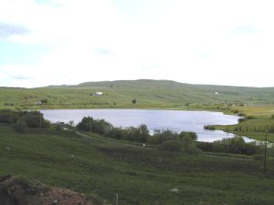

|

|
Le lac d'En-Bas est envahi par la tourbe
dans sa partie opposée au déversoir. Ce marais
est appelé "Les Sagnes " par les gens du pays. On y
trouve des droseras, plante carnivore, des saules arctiques
et d'autres plantes boréales.
La tourbe a été exploitée
jusqu'à la dernière guerre et les habitants
s'en servaient pour se chauffer.
|